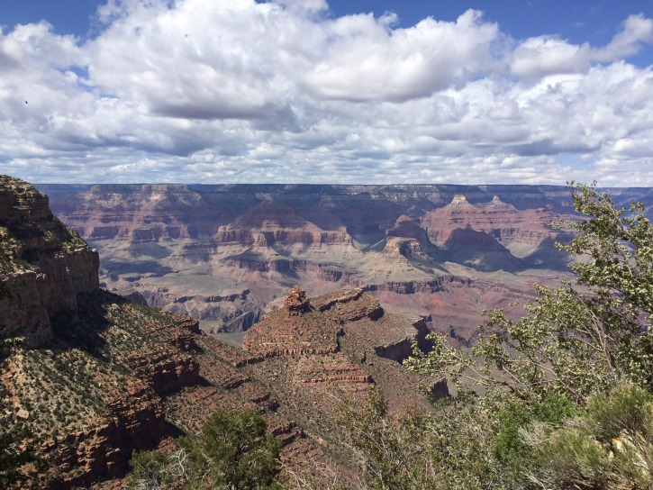
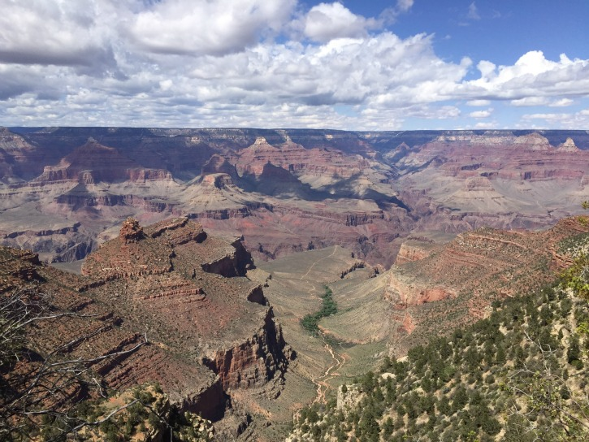
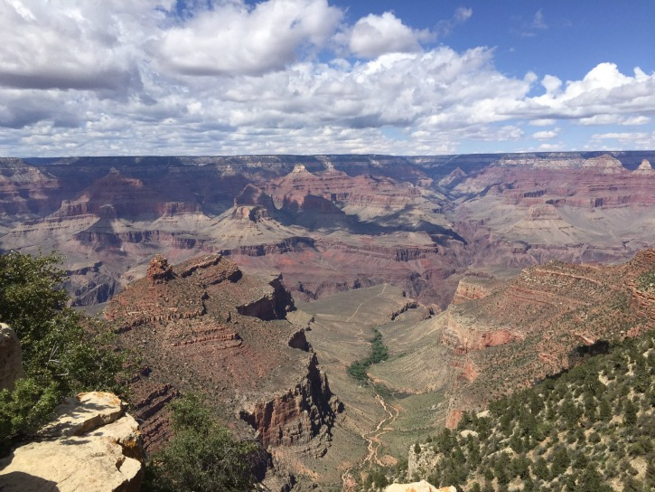
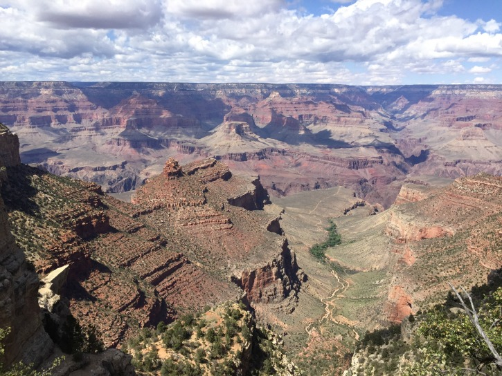
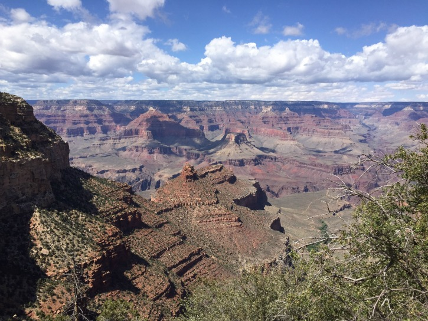
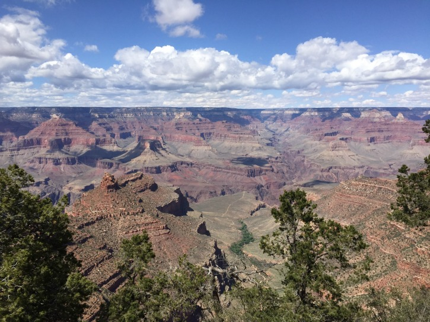

Lunch
Southwestern Angus Burger with some French Fries, yummy
Rim Trail

The views from the Rim were incredible.
Rim Trail
Having time to ourselves was great to have!
Rim Trail
More twists and turns with surrounding hills.
Rim Trail
It's like a painting!
Rim Trail
I was really happy to be here
Rim Trail
The building up there is El Tovar: Looks so far yet is so close
Rim Trail
I felt like a kid in a candy store!
Rim Trail
Fortunately, I didn't run off too much. No Haleakala!
Rim Trail
It felt like I was in heaven
Rim Trail
You know that feeling when you're in the zone. I was in the zone!
Rim Trail
The back of my shirt said 30, but I had more than 30 reasons to be there.
Rim Trail
Like a perfect dessert, this was worth savoring!
Rim Trail
I'm glad I did this!
Rim Trail
Living life to the Fullest; but being responsible about it.
Rim Trail
Not being a statistic, being a person!
Rim Trail
Woo Hoo!
Rim Trail
So So Amazing
Rim Trail
No Wonder this is one of the Seven Natural Wonders of the World
Kolb Studio
Couldn't imagine living in a place like this
Kolb Studio
It did look amazing to see though!
Lizard
This lizard was easier to spot...and to photograph
Bird
They say not to feed the animals, but they'll try to find our food in other ways
Grand Canyon History
The first European to see the Grand Canyon was Garcia Lopez de Cardenas, a Spainard who saw the Grand Canyon in 1540.
Native American tribes in the region, including the Hopi, Pueblo, Anasazi, Hualapai, Havasapai, and Navajo, have considered the Grand Canyon to be a holy and special places. For thousands of years, these tribes would live within the canyon, living in caves.
United States President Theodore Roosevelt, an avid outdoorsman, visited the Grand Canyon in 1903 and helped turn the Grand Canyon into a National Park to protect the land he considered a treasure.
The Grand Canyon fills me with awe. It is beyond comparison—beyond description; absolutely unparalleled through-out the wide world... Let this great wonder of nature remain as it now is. Do nothing to mar its grandeur, sublimity and loveliness. You cannot improve on it. But what you can do is to keep it for your children, your children's children, and all who come after you, as the one great sight which every American should see.
About 600 deaths have occurred in the Grand Canyon since 1870. Suicides, accidents, murder, you name it. It's all happened at the Grand Canyon.
In 1956, two airplanes flying over the Grand Canyon, departing minutes of each other, collided midair, killing everyone on both planes. Since then, flying over the Grand Canyon has been more controlled and stricter, if allowed at all (which is rare)
Grand Canyon National Park is the 15th oldest National Park in the United States, earning the distinction in 1919
Attempts to make the Grand Canyon a National Park began in 1882 by President Benjamin Harrison, but did not come to pass until 1919
On May 10, 2015, exactly 30 years after he was born, Adam Bodie made his first trip to the Grand Canyon with his parents and sister Jenn
Adam says "Excuse me!"
And Jenn responds
Hualapai
One tribal Nation associated with the Grand Canyon is the Hualapai (also known as Walapai). Their name translates in their native language as "People of Tall Trees", named after the Ponderosa Pines in the area. They primarily live on a 100 mile stretch along the South Rim of the Grand Canyon, mainly along the Western side of the Grand Canyon.
The Hualapai Indian Reservation was created in Arizona in 1883 by President Chester A Arthur. As of 2010, a little over 1,000 members of the tribe exists.
The Hualapai Tribe are the owners of the Grand Canyon Skywalk, a horseshoe shaped platform which visitors can walk on glass and look down at the Grand Canyon.
Exploring the Grand Canyon on our own
by Adam Bodie
After two stops, the bus tour was over (that's it?) and it was time to eat lunch. We ended up at the Arizona Room at the Bright Angel Lodge, with views of the Grand Canyon visible and easy walking access near the Grand Canyon. Even though Jenn's meal didn't turn out right (even after multiple attempts), it was a much-needed meal to have, with plenty of water to hydrate ourselves. Why did we not bring any water bottles in the Grand Canyon? Perhaps the biggest mystery of the trip.
After lunch, it was time to explore Grand Canyon Village before our rooms at the Maswik Lodge were ready for us. There were a plethora of view points to see the Grand Canyon from Bright Angel, all showing a different part of the Grand Canyon. Amazing how many twists and turns there are. One thing that intrigued me was the Bright Angel Trail, which went into the Canyon and had a tunnel in its path. Of course, today was not the day to go down there. And seeing the Kolb House sitting on the edge of the trail, looking out at the Grand Canyon, how can that even be?
I'm a Chipmunk Typewriter!
Of course, as the afternoon strolled along, fatigue started to hit and it was time to get our belongings off our backs and into our hotel rooms. After all, as Debbi repeatedly would say "My shoulder's hurt." We were able to get access to one of our rooms before the 4:00 check-in time. Strolling down to the Mesquite house of the Maswik Lodge, it felt like walking back in time to a modern looking cabin. Inside our room, we were amazed by how few plug-ins actually worked (I counted 2). Not fun in the 21st Century where everyone is used to using their iPhones and iPads with limited battery power.
Let's check the plugins
Naturally, when the other room became available, Adam's first comment was "Let's check the plugins." Having an place to charge your phone is important, especially if your battery is shot. When Dad told us "It's 56." Jenn and Mom asked "The temperature?" But Dad wasn't talking about the temperature, "No, the charge." Impressive considering it started at 12%. That's the price you pay for having a bad battery. It loses its charge really quickly, then you can't use it as much without wondering "Is my phone going to die?" And if that were the case, you'd be stuck if you really needed it in an emergency. Thank god for plug-ins, so Dad's phone could get to 56%!
Don't go through the back door unless you want to get spanked by the bus
Now it was time to figure out Adam's Birthday Dinner. Our original plan of eating at El Tovar was cancelled by Mom due to not wanting to eat a few hours after lunch, but with limited options, the bickering began. El Tovar Lounge, Bright Angel, Pizza Pub, El Tovar Lounge, Bright Angel, El Tovar, Bright Angel. Should we go to the lounge at El Tovar. How about Bright Angel. El Tovar. Bright Angel. The bickering went on for a while. After Jenn was done crashing, we made our back to the main lodge to catch the bus to El Tovar. Or was it Bright Angel. After missing 4 buses due to Mom having to go back to get her iPhone, realizing her key didn't work, having Dad go back and it still didn't work, but was able to get access through the other room to get the phone, and then more complaining about the key not working, we finally made it on the blue bus, unfortunately that took us longer as we needed to loop around to get to El Tovar, or was it Bright Angel.
Getting Steps the Easy Way
Havasupai
The Havasupai tribe, (not to be mistaken with the Hualapai tribe), is another tribe in Arizona that lives in the Grand Canyon, to the West of Grand Canyon Village (but not as far west as the Hualapai), living in an area the size of Delaware. The capital of the tribe, Supai, is notable as the only place in the United States where mail is delivered by Mules. Their name translates to "Blue-Green water people".
Like many tribes, the Havasupai Indian Reservation was created by President Chester A Arthur. They lived in the land that became Grand Canyon National Park until they were forced out in 1928 after the National Park was created.
As of 2010, 650 people live in the Havasupai Reservation, living in one of the most remote towns in the United States, Supai. The nearest road to the town is 8 miles away and requires either air travel or mule ride into town (no cars are in the community).